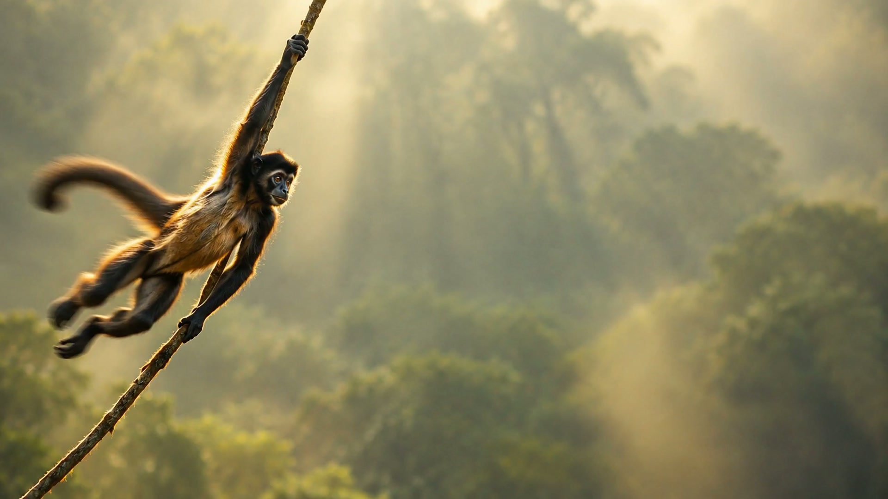
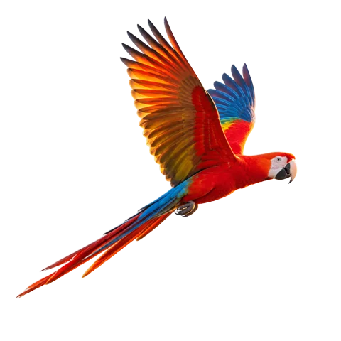
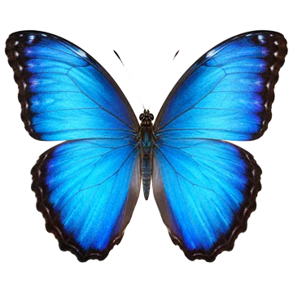
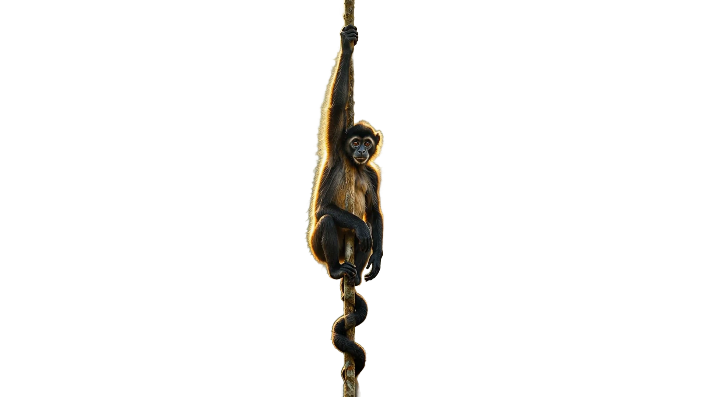

Acompañá al mono araña en su travesía vertical desde la cima soleada hasta el piso húmedo de la selva.
Troncos musgosos, lianas milenarias y rayos filtrados. En la penumbra habitan aves y mariposas de alas brillantes.
Llegada al claro de helechos. Un instante de descanso tras el viaje por el dosel amazónico.
Explorar la expedición